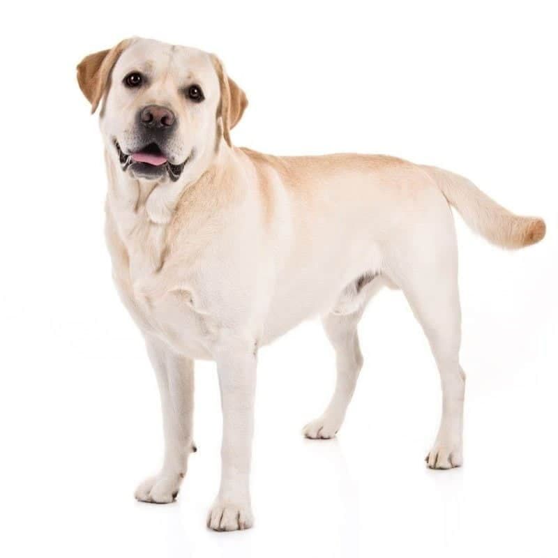
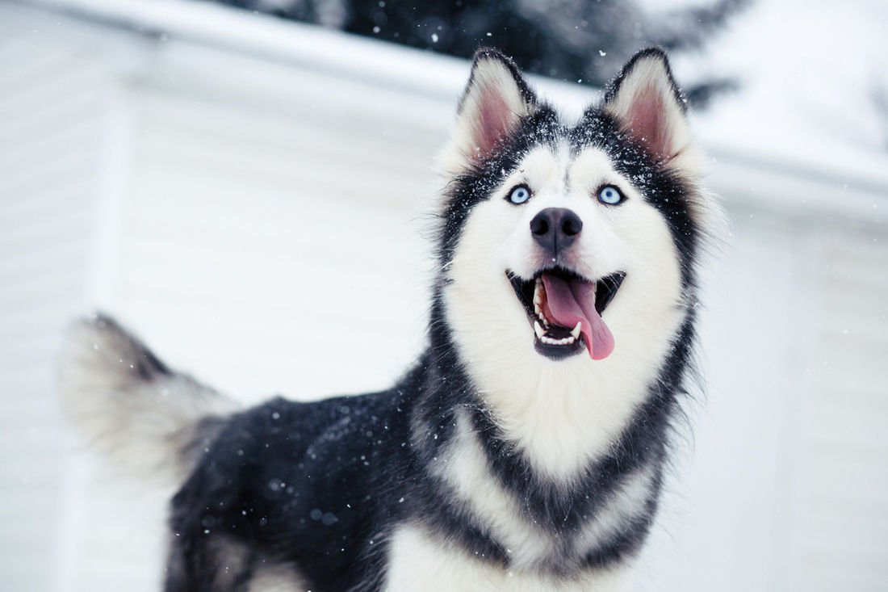

Популярные породы

Лабрадор
Лабрадоры — это крупные, сильные собаки с крепким телосложением и прочным скелетом. У них широкие голова и нежные, умные глаза. Их хвосты абсолютно уникальны и похожи на хвост выдры.

Немецкая овчарка
Образ немецкой овчарки – смышленая наклоненная набок морда с большими стоячими ушами – всплывает в голове первым, когда речь заходит о собаках. Действительно, это одна из самых распространенных в мире пород.

Хаски
Это собаки среднего размера. Они воплощение баланса силы, скорости и выносливости. У этой породы двойная шерсть средней длины, стоячие уши и пушистый хвост.